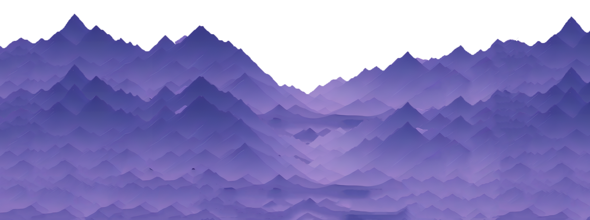
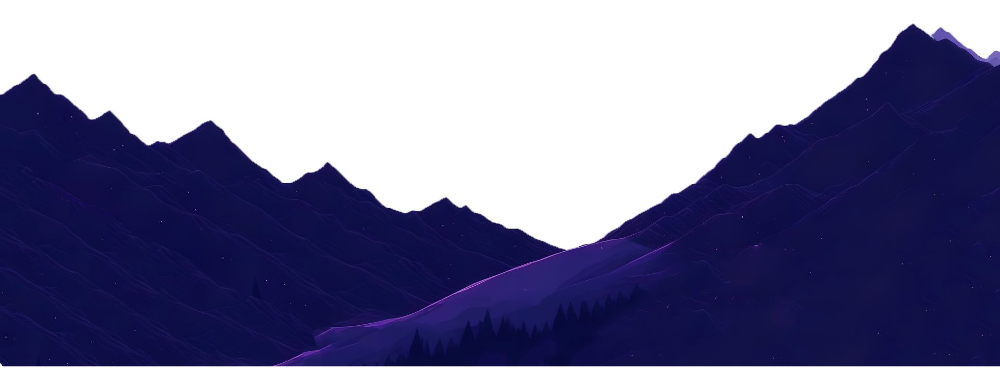
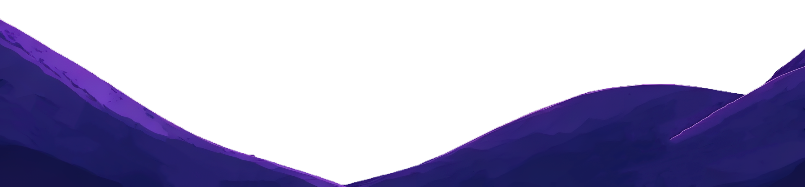
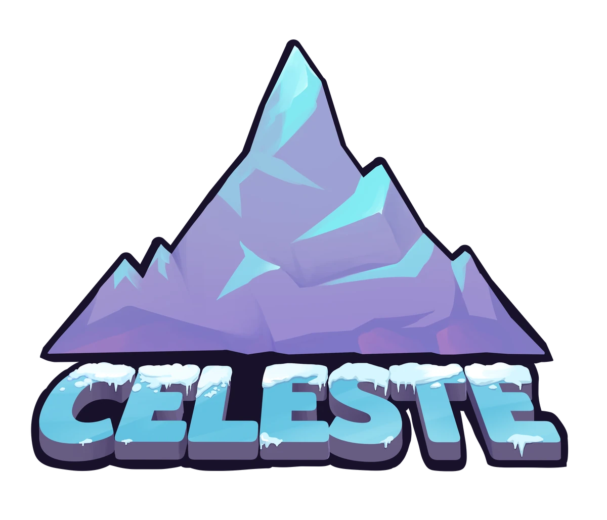
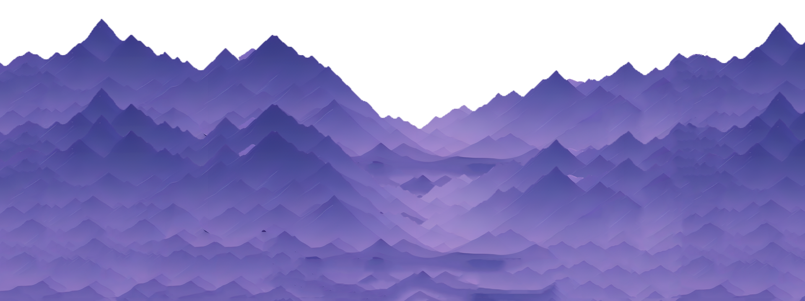
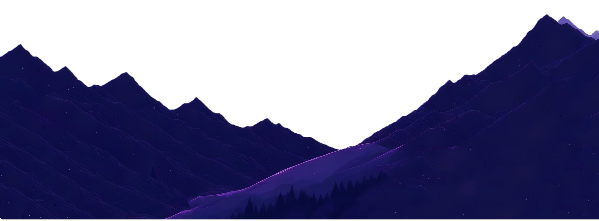
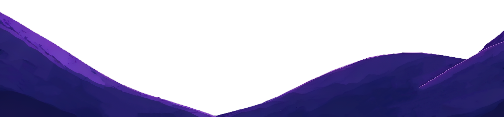
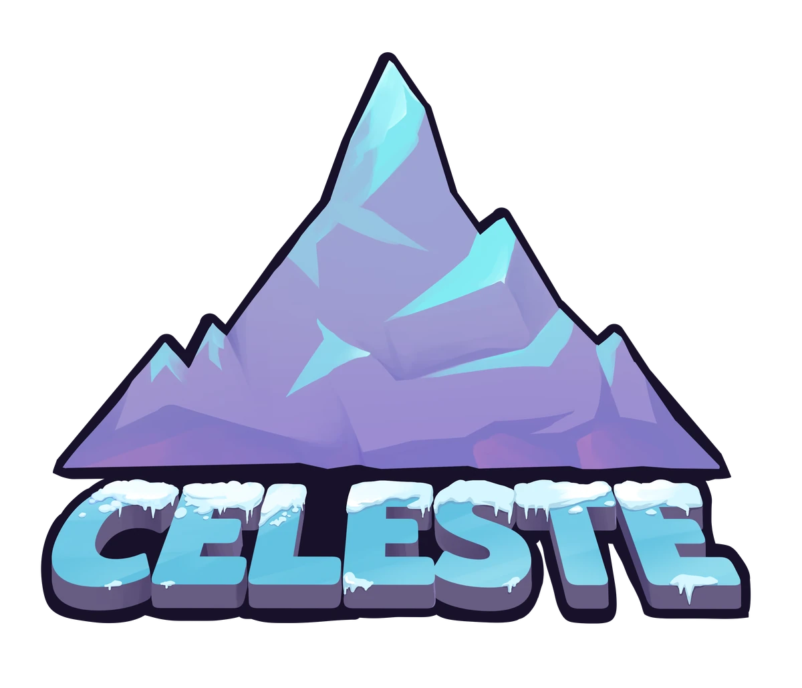
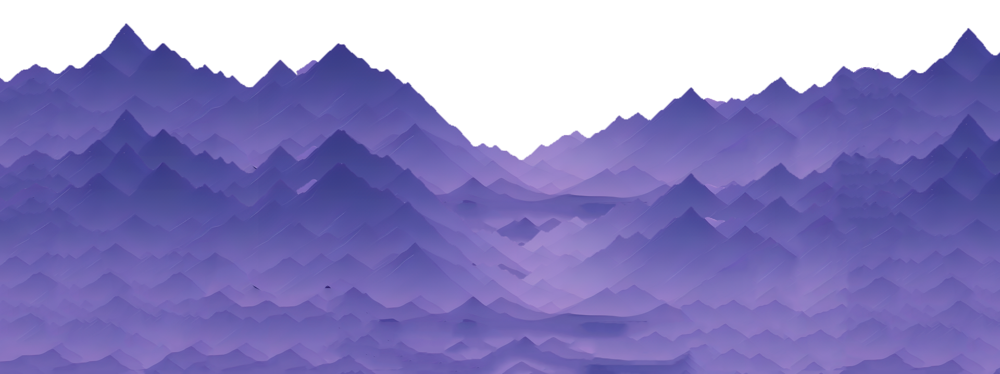
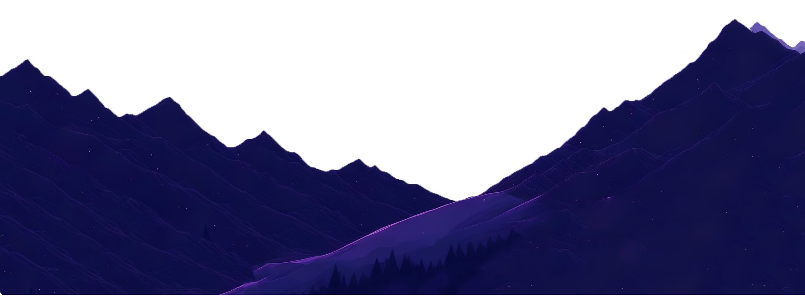
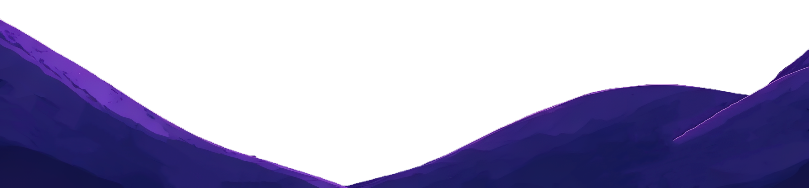
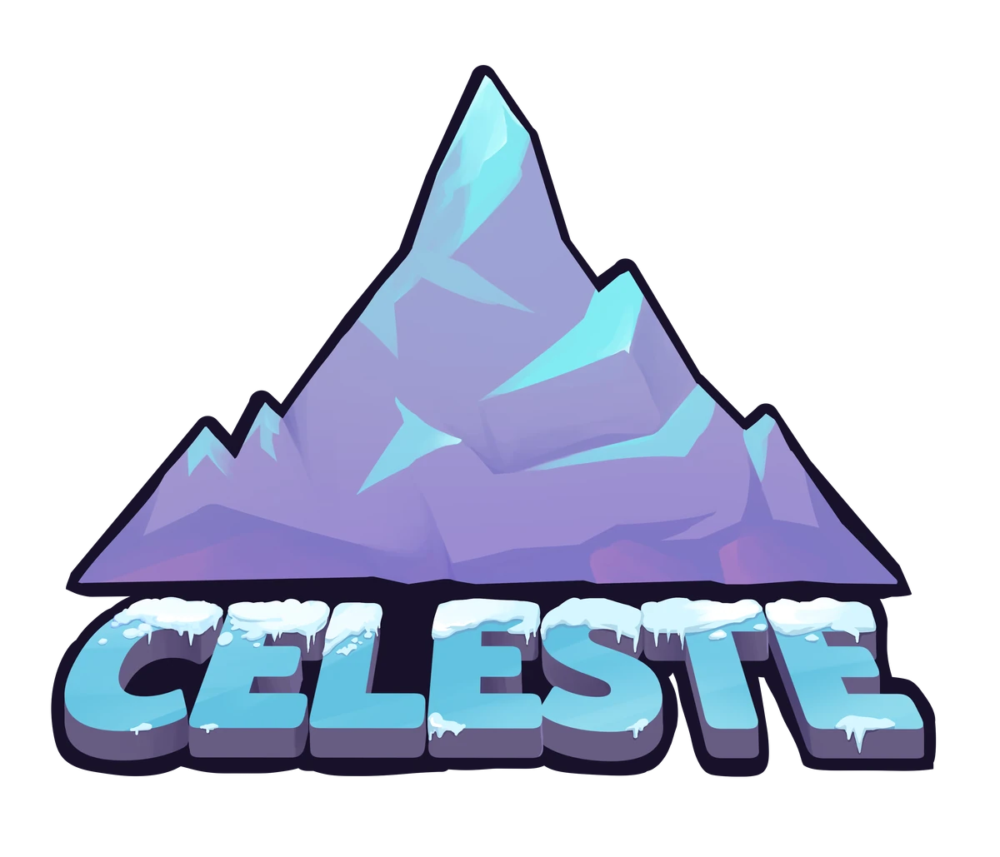
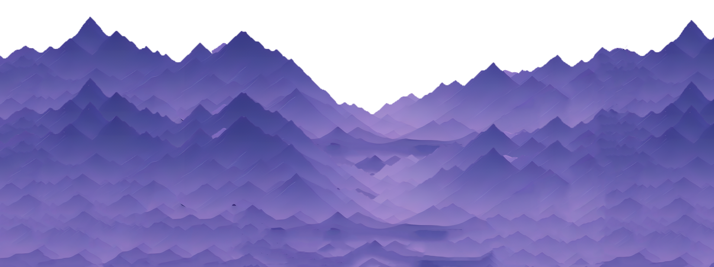
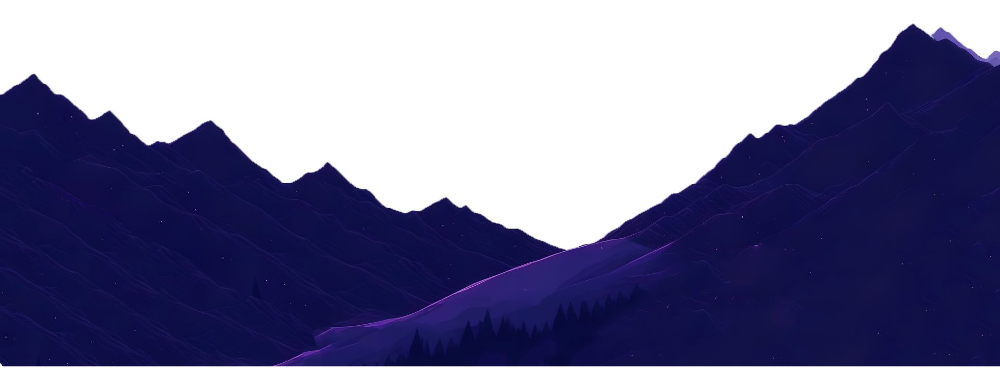
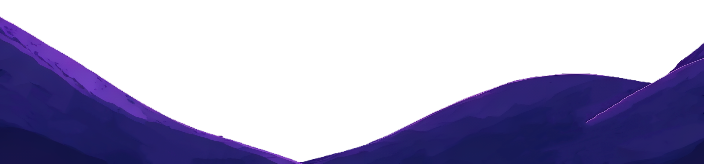
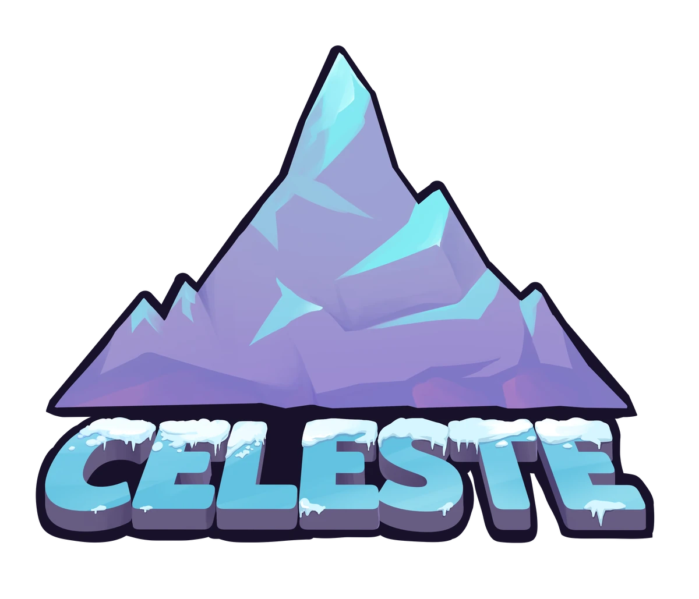
Celeste é um jogo de plataforma indie que mergulha os jogadores em uma jornada emocionante de autodescoberta e superação. Controlando a corajosa Madeline, os jogadores enfrentarão desafios mortais enquanto lutam contra seus próprios medos internos. A narrativa habilmente entrelaçada com a jogabilidade cativa e comove, destacando a importância de enfrentar e superar nossos medos mais profundos.
Além disso, as mecânicas de plataforma precisas proporcionam uma experiência desafiadora e gratificante, sendo um dos jogos de plataforma com as fases mais difíceis, oferece um teste de habilidade para os jogadores mais dedicados. Celeste é um jogo que transcende a diversão, proporcionando uma experiência única de superação pessoal.
Madeline ↑
Para aqueles que quiseram ir um passo além, há o cenário de speedrun, que consiste em buscar os melhores tempos de conclusão em determinadas partes do jogo e praticar mecânicas precisas, explorando também o lado emocional da jornada de Madeline. A busca pela perfeição nos desafios de speedrun reflete a determinação e coragem de enfrentar seus próprios medos internos, em uma jornada de autodescoberta e superação. A comunidade colaborativa de speedrun de Celeste cria um ambiente acolhedor, onde os jogadores compartilham estratégias e apoiam uns aos outros, em busca de se superarem e alcançarem novos recordes.